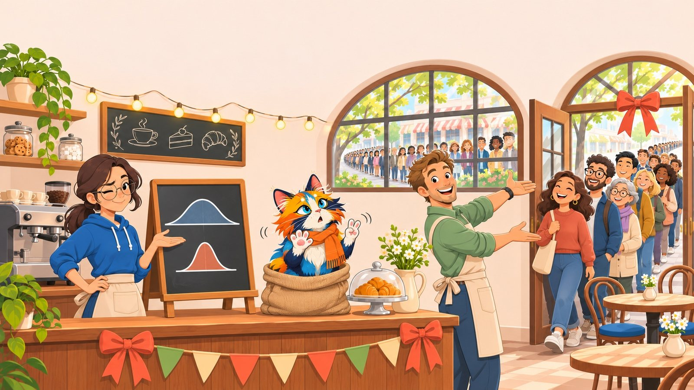
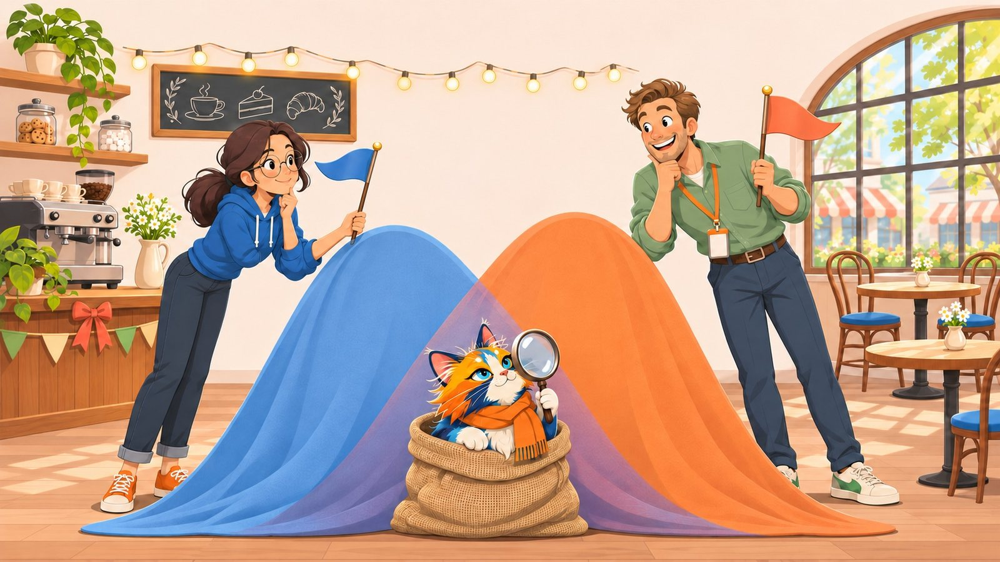

Сначала вспомним
Алиса запустила A/A: обе группы видят старое меню, в каждой по 5000 гостей. В одной заказали 512 гостей, в другой 487. Что это значит?
Одинаковые группы всё равно расходятся: из 5000 гостей случайно закажут то 512, то 487. При таком размере разница в 25 заказов встречается примерно в 4 A/A из 10. Разница есть всегда — это было в шаге 3.
Гости, которые сами включили тёмную тему, заказывают на 15% больше остальных. Тёмная тема поднимает заказы?
Тёмную тему включают сами гости, и это обычно самые увлечённые пользователи приложения. Они заказывают чаще и без темы. Чтобы узнать эффект, тему должна включать монетка — это было в шаге 1.
Шаг 5 из 11
Ширина колокола
После шага ты сможешь прикинуть, сколько нужно гостей для нужной точности.

За неделю теста среднее шатается на ± 2%. Сколько недель нужно, чтобы оно шаталось на ± 1%? В прошлом шаге средние по многим людям собрались в колокол. Теперь главный вопрос: насколько он широкий.
Ширина колокола показывает, насколько среднее шатается от раза к разу. Узкий колокол — среднее почти не шатается. Широкий — сегодня одно, завтра другое. В A/B‑тесте от этой ширины зависит всё: какую разницу мы заметим, а какую примем за шум.
Но узкий колокол говорит только о шуме. Если метрика считается с ошибкой, узкий колокол уверенно покажет неверный ответ. Об этом карточка «Тир» в конце шага.
Считаем, как и в шаге 4, заказы на человека за неделю: у 60% ноль, у остальных один, два, иногда десять и больше. В среднем около 1 заказа.
Людей в 4 раза больше


Если в эксперименте будет в 4 раза больше людей, среднее станет в 4 раза точнее: ширина / 4. Логично же!
Средние считаем по выборкам. Людей в каждой выборке стало в 4 раза больше. Во сколько раз сузится колокол средних?
Выбери вариант.
Колокол и число людей
Выбери, по скольку людей в каждой выборке, и насыпь 500 выборок. Каждая точка гистограммы — одно среднее. Скобка под колоколом — его ширина: на столько среднее обычно отходит от правды. Попробуй несколько размеров подряд: 25, 100, 400, 1600.
500 средних, гистограмма
Твои замеры: пока нет
Точность дорожает быстро
Вот как ширина колокола зависит от числа людей. Серая линия — теория, точки — твои замеры с прошлой карточки.
Чтобы колокол стал вдвое уже, людей нужно вчетверо больше
Полоса в две ширины

Возьмём выборки по 1000 человек. Ширина колокола тут около 0.075 заказа. Отложим от правды по две ширины в каждую сторону: получится полоса примерно от 0.85 до 1.15.
Сколько из 1000 средних попадёт в эту полосу, как думаешь?
1000 средних и полоса: ± одна и ± две ширины колокола
Какое кафе странное?
У сети 30 кафе: есть крошечные, есть огромные. На графике каждое кафе — точка: слева направо — сколько заказов в нём было за месяц, снизу вверх — какая доля из них повторные, когда гость заказал во второй раз.
Почти во всех кафе гости на самом деле возвращаются одинаково часто. Но одно кафе по-настоящему отличается. Нажми на точку, которую считаешь странной.
Кафе: число заказов и доля повторных
Выбери кафе на графике.
Сколько людей — такая и точность
Если на самом деле доля — 50%, то по выборке примерно в 95 случаях из 100 мы увидим число в таких пределах:
| Людей в выборке | Увидим примерно |
|---|---|
| 100 | от 40 до 60% |
| 1 000 | от 47 до 53% |
| 10 000 | от 49 до 51% |
| 1 000 000 | от 49.9 до 50.1% |
Это та же полоса в ± 2 ширины колокола: людей в 100 раз больше — полоса в 10 раз уже.
Идея из книги: Дэвид Шпигельхалтер, «Искусство статистики»
От чего зависит ширина
Ширина колокола складывается всего из двух вещей. Открой карточки.
Трафик не лечит баг
Четыре стрелка стреляют по мишеням. Центр мишени — настоящий эффект фичи, каждая точка — результат одного эксперимента. Чем дальше точка от центра, тем сильнее эксперимент ошибся. Первые два стрелка считают честно, у двух других баг: в группе B каждый пятидесятый заказ записывается дважды, и это добавляет B около +2%.
Четыре мишени: точный стрелок, шумный, смещённый и с обоими пороками
Каждая точка — один эксперимент. Нажми «Вчетверо больше гостей» и посмотри, какие облака сожмутся и куда.
В настоящем тесте мишени не видно: где правда, мы не знаем. Разброс заметен по самим точкам, а смещение — нет. Его ловят по-другому: A/A‑тестом, где правда известна заранее и равна нулю, и проверкой долей групп — это шаги 2 и 10. Если в A/A группа B стабильно «выигрывает» 2%, виноват подсчёт, а не фича.
Тест на 2 млн гостей показал B +2.1%, колокол очень узкий. Но и в A/A на этой платформе B стабильно получает около +2%. Что скажешь?
A/A — как контрольная гиря на весах: там правда известна, это ноль. Если и там B получает +2%, почти весь «эффект» теста объясняет подсчёт. Миллионы гостей сделали колокол узким, но не сдвинули его к правде. Сначала чиним подсчёт, потом смотрим на фичу.
Идея из книги: Дэниел Канеман, Оливье Сибони, Касс Санстейн, «Шум»
Ширина на глаз
Эксперимент шёл неделю. Боб продлил его ещё на три недели при том же трафике. Что стало с шириной колокола?
Неделя превратилась в четыре, и людей стало примерно в 4 раза больше. Вчетверо больше людей — вдвое уже колокол. Оговорка: если многие гости возвращаются каждую неделю, новых людей прибавится меньше, и колокол сузится чуть слабее.
Нужно, чтобы колокол стал в 10 раз уже. Во сколько раз больше людей понадобится?
Вчетверо больше людей — вдвое уже, а в 100 раз больше людей — в 10 раз уже: 10 × 10 = 100. Поэтому крошечные эффекты так дорого ловить: каждый следующий знак точности стоит в сто раз больше людей.
В среднем человек делает 1 заказ в неделю. Берём выборку из 400 человек, ширина колокола 0.12. Где её среднее окажется примерно в 95 случаях из 100?
Две ширины — это 0.24. Отложи их от правды в обе стороны: от 0.76 до 1.24. Так бывает примерно в 95 случаях из 100.
Вчетверо больше гостей — вдвое точнее
- Ширина колокола показывает, насколько среднее обычно отходит от правды.
- Больше людей — уже колокол, но медленно: вчетверо больше людей — вдвое уже, в 100 раз больше — в 10 раз уже.
- Правило двух ширин: в полосу ± 2 ширины вокруг правды попадает около 95% средних.
- Ширина зависит только от числа людей и от того, насколько люди разные.
- Маленькие группы шумят сильнее. Прежде чем искать «странное» кафе или сегмент, нарисуй воронку: выпадает ли оно за ± 2 ширины для своего размера.
- Трафик не лечит баг. Больше гостей сжимают колокол, но не сдвигают его к правде. Если подсчёт кривой, узкий колокол уверенно покажет неверное число; смещение ловят A/A‑тестом.
Теперь у того, что мы сделали руками, есть названия:
- Стандартная ошибка
- ширина колокола среднего, обычный отход среднего от правды
- Правило ± 2
- в пределах двух стандартных ошибок от правды лежит около 95% средних
- Смещение
- ошибка, которая сдвигает все результаты в одну сторону, например из-за бага в подсчёте; больше гостей её не уменьшают
